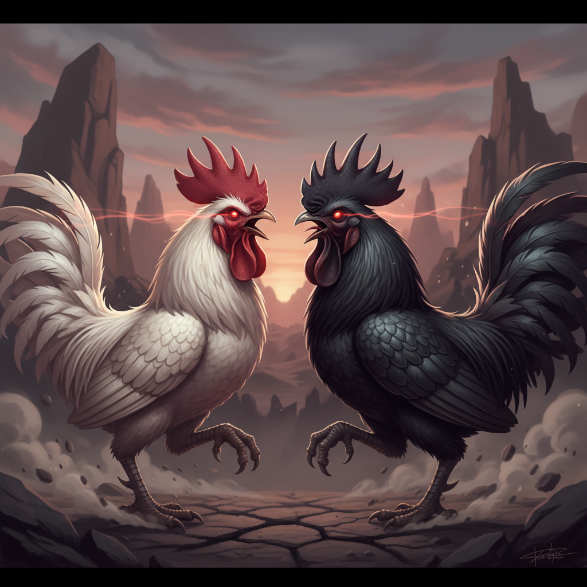

Como eu construí uma equipe de IA que trabalha 24/7
usando OpenClaw
Marco Bahe · Full Funnel · Março 2026

"O bom é o branco...
mas o marvado é o preto." 🐓
O bom
Executa tarefas pontuais.
Morre quando fecha o terminal.
O bom também
Colaboração em tempo real.
Cron jobs. Mas preso no desktop.
O marvado
24/7. Memória. Multi-canal.
Skills. Sub-agentes. Sem limites.
Você não contrata uma pessoa pra fazer tudo.
Por que faria isso com IA?
Cada agente tem personalidade, especialidade e escopo definido.
Quanto mais especialista, melhor o resultado.
Full Whisper: app nativo macOS de transcrição por voz.
Gravação, transcrição, cola automática. 8 versões em 1 dia.
API, licenciamento, multi-provider, multilingual, ícone.
Benchmark de 8 concorrentes, roadmap, estratégia AppSumo.
Resultado em 48h:
⏱️ Tempo estimado manual: 1 mês+
Full Bot: atende clientes da Full Funnel sem intervenção humana.
💬 O que ele faz:
Responde dúvidas, consulta knowledge base, agenda calls, escala pra humano quando precisa.
📚 Base de conhecimento:
636 artigos indexados automaticamente. Atualiza sozinho toda madrugada.
🧠 Aprende sozinho:
Aprendiz analisa conversas passadas, identifica gaps e melhora as respostas.
🌙 23h: Pedi pro agente pesquisar concorrentes do Full Whisper.
☀️ Manhã seguinte: Benchmark completo de 8 concorrentes.
Preços, features, pontos fracos, oportunidades. Tudo documentado.
🎯 Resultado: Descobri que o diferencial matador é BYOK (Bring Your Own Key).
Nenhum concorrente grande oferece. Nós oferecemos.
"Eu acordei e a pesquisa que levaria um dia inteiro já estava pronta."
O agente cuida da operação enquanto eu cuido do negócio.
⏰ Cron Jobs:
Tarefas agendadas que rodam automaticamente. Checagem de suporte a cada minuto. Atualização de KB toda madrugada. Re-indexação de memória periódica.
💓 Heartbeats:
Verificações proativas a cada 30 min. Checa emails, calendário, status dos serviços. Só me avisa quando algo precisa de atenção.
🌙 Turno da Noite:
Enquanto eu durmo, o agente pesquisa mercado, estuda atualizações da plataforma, identifica oportunidades e me deixa um briefing matinal.
🧠 Memória Persistente:
Lembra de tudo. Decisões, preferências, contextos. Acordo e continuo de onde parei — ele sabe exatamente o que está acontecendo.
Tudo isso operado por uma pessoa.
Com um time de IA que nunca dorme.
De hobby a produção — o caminho real.
🖥️ Mac Mini Principal
Agente orquestrador (Fully). Acessa desktop, navegador, terminal. Conectado via Telegram.
☁️ VPS Hostinger Produção
Bot de suporte 24/7. Containers isolados. Mais barato que qualquer funcionário.
🔮 Futuro Roadmap
VPS potente (Hetzner) como principal. Mac Mini como auxiliar. Escala real.
💡 Começou: Laptop pessoal
📦 Evoluiu: Mac Mini dedicado
☁️ Escalou: VPS pra produção
🚀 Próximo: Multi-servidor
Custo total: ~$250/mês
Menos que um estagiário. Mais que um time.
"Isso não é o futuro.
Já está acontecendo."
Quem montar seu agente agora
vai ter vantagem competitiva absurda
em 6 meses.
O galo bom te ajuda no dia a dia.
O marvado transforma seu negócio.
📦
1. Instale
openclaw.ai
5 minutos de setup
📝
2. Configure
SOUL.md + MEMORY.md
Defina a personalidade
🚀
3. Conecte
Telegram, Discord, Slack
Converse de qualquer lugar
Marco Bahe
Full Funnel · @MarcoBahe
Esta apresentação foi feita pelo Fully,
meu agente OpenClaw. Em tempo real. Pelo Telegram. 🐾